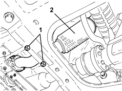

1076B84 RIGHT EXHAUST PIPE BETWEEN CATALYTIC PRECONVERTER AND CONVERTER - R.R.
- Path
- Procedures > 10 ENGINE > 1076 EXHAUST PIPES AND SILENCERS > 1076B EXHAUST PIPES AND SILENCERS > 1076B84 RIGHT EXHAUST PIPE BETWEEN CATALYTIC PRECONVERTER AND CONVERTER - R.R.
- Kind
- repair procedure (removal / refitting; the operation number is the code)
- Applies to
- engines: 3.2 JTS; all production periods
- Interactive page
- https://sloeber94.github.io/elrnDB/#/939005281
Applies to: engines: 3.2 JTS; all production periods
 Removing
Removing
 Refitting
RefittingOp. 1076B82 LEFT EXHASUST PIPE BETWEEN CATALYTIC PRECONVERTER AND CONVERTER - R.R.
1. Undo the nuts securing the exhaust pipe to the catalytic converter.
- Undo the bolts fixing the exhaust pipe to the catalytic preconverter.
2. Remove the exhaust pipe and gaskets.

Applies to: engines: 3.2 JTS; all production periods
Refitting
Removing- Place the exhaust pipe in position with the gaskets.
- Tighten the bolts and the nuts fastening the exhaust pipe to the precatalyzer and to the catalytic converter.
Op. 1076B82 LEFT EXHASUST PIPE BETWEEN CATALYTIC PRECONVERTER AND CONVERTER - R.R.